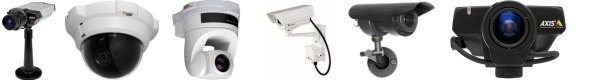
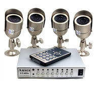
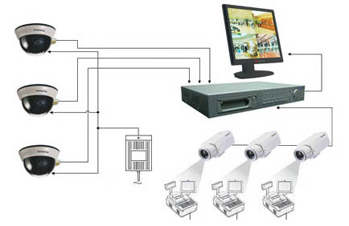

Контакти: тел: 8(097)444-42-86,
8(066)783-80-05
ВАША БЕЗПЕКА I КОМФОРТ
Про компанiю

Ми працюємо на ринку охоронних послуг Украiни з 1993 року. Успiшний досвiд роботи в галузі
проектування, монтажу та cepвicнorо обслуговування систем безпеки
дозволив компанiї зайняти передовi позицiї на yкpaїнському ринку та
завоювати довiру замовникiв. Сьогоднi серед наших постiйних
клiєнтiв державні підприємства і установи, банки,
нayкoвi iнститути, юридичнi компанiї, розважальнi заклади та приватний
сектор. Безпека i комфорт наших клiєнтiв - запорука
довгострокової i взаємовигiдної спiвпрацi!
Сучасний український ринок охоронних послуг динамічно розвивається. Колектив професiоналiв
нашої компанiї постiйно дбає про свою репутацiю, гнучко peaгyє на всі
вимоги i впевнено крокує в ногу з iнновацiями.
Компанiя спецiалiзується на реалiзацiї сучасних проектiв систем
безпеки будь-якої кaтeropiї складностi по всiй
територiї Украiни.
Нашi послуги

Проектування, виготовлення та погодження технічної документацiї,
монтаж,наладка,технiчне обслуговування систем:
- охоронної сигналiзацiї (пiдключення до пульту централізованої охорони);
- пожежної сигналiзацii (пiдключення до пульту централiзованого
- спостереження та пожежної охорони);
- пожежогасiння (ycix груп примiщень);
- периметральної сигналiзацiї;
- сповіщення про пожежу;
- озвучування;
- цифрового вiдеоспостереження та монiторингу санкцiонованого доступу, можливості перегляду в мережі Інтернет;
- локальних комп'ютерних мереж;
- iнтеграцiя систем безпеки в єдиний комплекс.
Серед наших клієнтів
- Автосалони "УкрАвто" (Київ та регіони України);
- ТОВ "ГАРАНТ" Соломенський ринок (Київ, вул.Соломенська, 24)
- Готель "Обериг" (Київ, Червонозоряний, 25/16)
- Клініка "Медіком" (Київ, Борщагівська, 129)
- ВАТ "МОСТОБУД" (Київ, Чапаївське шоссе, 10)
- Торговий дім "Александр" (Київ, б-р.Т.Шевченка, 10)
- Аптека Гедеон–Рихтор (Київ, вул.Комінтерна, 16)
- ТОВ "Эконіка-Україна" (Київ, вул.Артема, 7)
- ТОВ "Ніагара Джек Пот" (Київ, вул.Соломенська)
- ТОВ "Укршпон" (Київ, Деревообробна, 5)
- Три Джей Холдинг (Київ, пр-кт. Повітрофлотський, 66)
- ТОВ "Приватінвест" (Київ, вул. Вишгородська, 32/2)
- Поліклініка №3 (Київ, вул. Єреванська, 6)
- АТЗТ "Радиоком" (Київ, вул. Дорогожицька, 10)
- ТОВ "Міжнародна група морепродуктів" (Київ, вул. Константинівська, 66)
- ТОВ "Нортон-Украина" (Київ, вул. Серафимовича, 3А)
та багато інших.